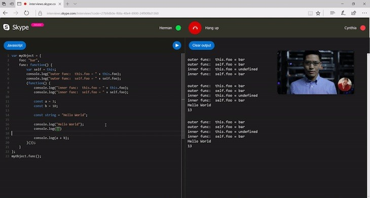

Si alguna vez habéis tenido que realizar una entrevista por videollamada para un puesto técnico, estaréis al tanto de la complejidad de demostrar vuestros conocimientos al tener que estar pendiente de la videollamada y el editor de código. Por esta razón, es probable que os llame la atención la herramienta que acaba de presentar Skype, con la que la plataforma de comunicación permitirá entrevistar candidatos con editor de código en tiempo real.
Hablamos de Interviews on Skype, una herramienta con la que será posible entrevistar a candidatos de cualquier parte del mundo comprobando sus conocimientos y habilidades en tiempo real. Y lo mejor de todo es que además de ser totalmente gratuita, no es necesario descargar ninguna extensión adicional o iniciar sesión para aprovechar sus ventajas. En concreto, todo el proceso se lleva a cabo desde el mismo navegador.
Si nos centramos en el editor de código en tiempo real, los candidatos podrán utilizarlo incluso para ejecutar el código y comprobar los resultados de inmediato, lo que les permitirá realizar correcciones en caso necesario. Además, con el objetivo de evitar errores por despistes, Interviews on Skype cuenta con un sistema de subrayado de errores en los que se incluye la sintaxis de siete de los lenguajes de programación más populares a día de hoy.
Sin duda, se trata de una herramienta con la que la compañía facilita enormemente el proceso de entrevistar a candidatos de perfil técnico a través de Internet. Si os ha llamado la atención, podéis consultar toda la información oficial en el siguiente enlace a la web de Skype.


Sergio Asenjo
Madrileño de nacimiento y actualmente residente en Valencia, se ha considerado desde siempre un apasionado por todo lo relacionado con las nuevas tecnologías e Internet desde que a corta edad llegase a sus manos su primer ordenador. A partir de ese momento ha sentido la necesidad de probar en profundidad cada gadget nuevo que salía al mercado. Por ello, le gusta estar constantemente informado acerca de todo lo que ocurre en este mundo y de ahora en adelante lo compartirá en WWWhat’s new.